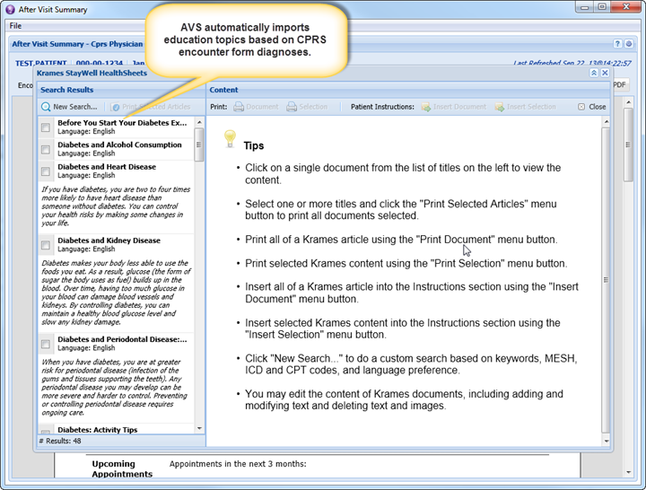
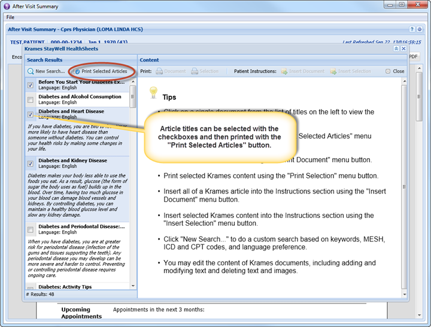
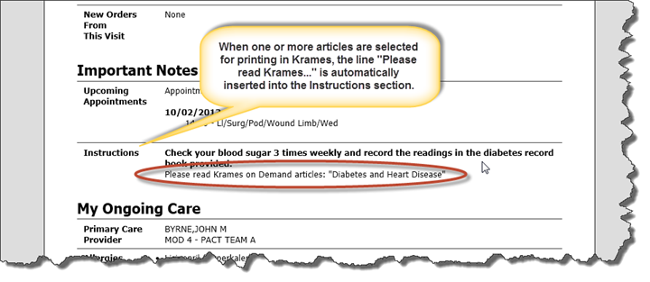
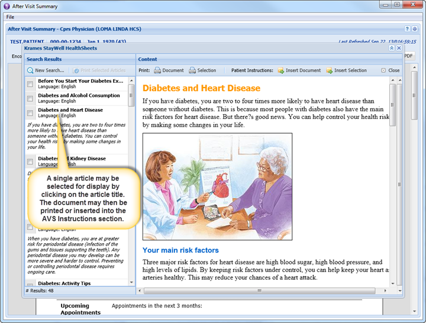
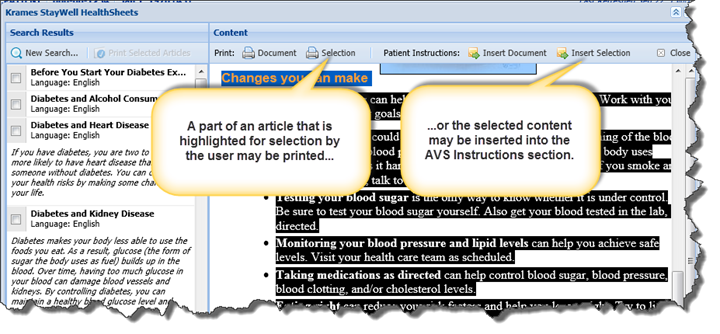
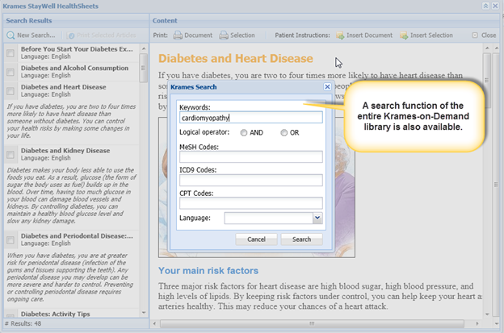

Select the "Krames" button from the AVS toolbar to open Krames-on-Demand patient education material.
When it is first opened for a patient, the Krames interface will automatically search the Krames database for patient education content based upon the patient's diagnoses from the encounter form. The user may also perform a manual search which supports queries for Krames content based on keywords, MESH codes, ICD-9 codes, and CPT codes. The patient's preferred language may also be selected on the search form.
The user can select multiple documents from the Search Results displayed on the left side of the screen and choose to import them all into the Patient Instructions section of the AVS or printed off as separate documents. Parts of a Krames article may be selected and inserted into the AVS or printed separately.





